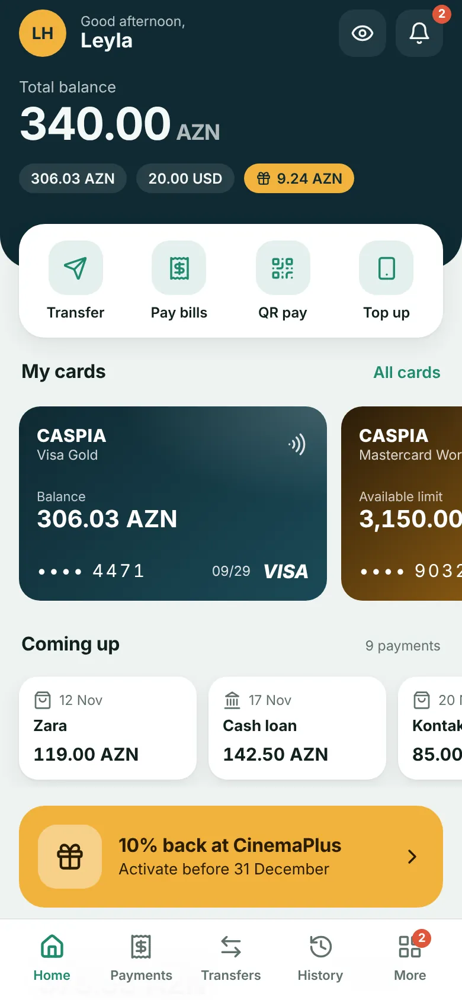
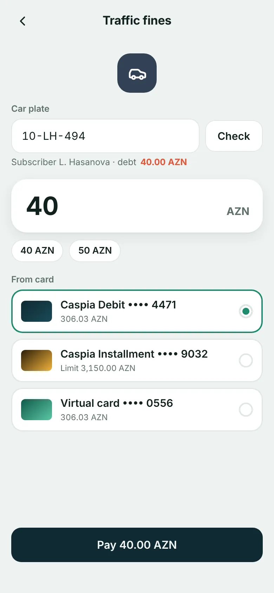
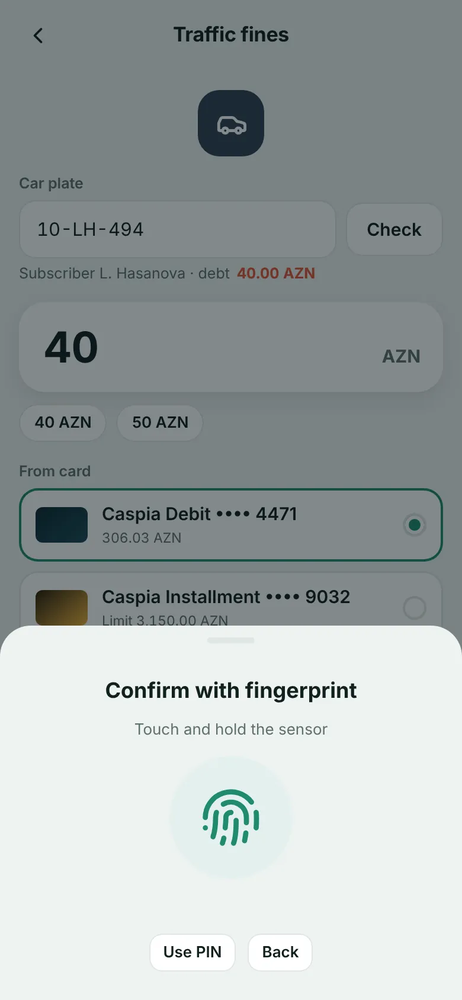
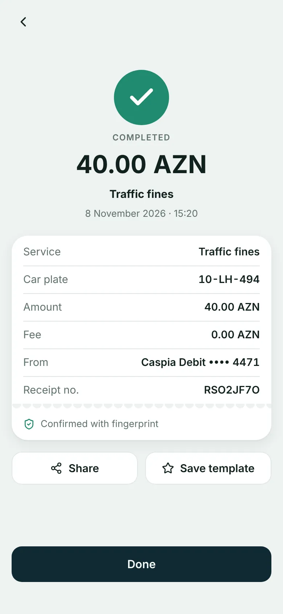
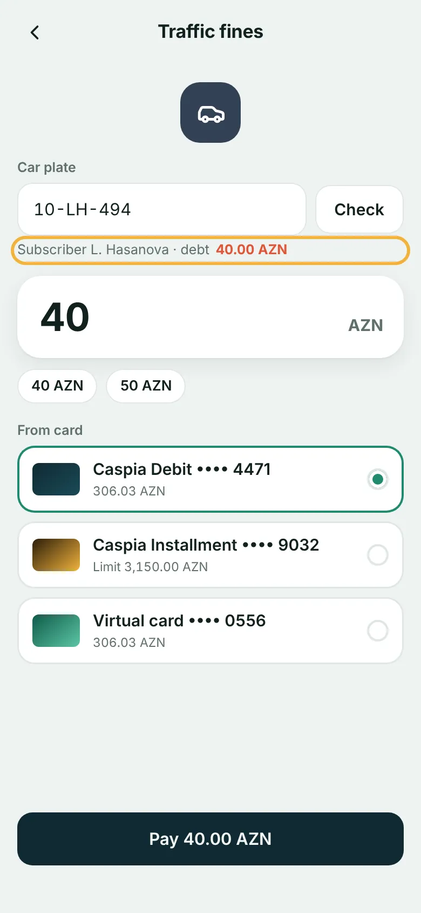

Paying a traffic fine in a bank app
Five taps, if you know where to look.
Payments, then the fine under Due now, then Pay, Confirm and the fingerprint.

With Seda in the same app
Your customer says it. The app does the steps.
“Pay my traffic fine.” Seda opens the right screen, the bank checks the amount, and nothing is paid until the fingerprint.

By hand




The customer opens the app on Home.
By voice

The customer opens the app on Home.
Paid by voice while the manual path is still on the Traffic fines screen.
By hand
Four screens to remember.
- Find Payments in the tab bar
- Spot the fine under Due now
- Check the amount and tap Pay
- Review, Confirm, hold the sensor
By voice
Every step is on the record.
The bank sees what the customer said, what Seda understood, each call to the bank and the fingerprint that signed the payment.
Without a voice layer
A new journey means new screens.
Designing them, building them, releasing an app update, and teaching customers where the new button lives.
AI Studio in the Seda console
One sentence from the bank.
“Add traffic fine payments by voice, max 100 AZN, only from the debit card, and remind users on Fridays if they have unpaid fines.”
- Flow
- Pay traffic fines
- Limit
- 100 AZN per payment
- Card
- Caspia Debit only
- Reminder
- Fridays at 10:00 if unpaid
- Confirmation
- Fingerprint, always
4 of 4 tests passed Live after an admin approved it.
What a voice assistant must never do.
- Take an amount from a misheard word
- Move money on its own
- Guess an answer about fees or rates
- Ask for a PIN or an SMS code
What Seda does instead.
- Amounts come from the bank’s data or a tap
- The bank’s execute() needs the customer’s fingerprint
- Answers only from the bank’s knowledge base
- Never asks for secrets, and warns when someone else does
Seda plugs into your app through your own MCP server.
Your bank keeps the data and executes every payment. Seda adds the voice layer, AI Studio and Live Traces on top.